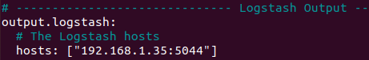

Instal·lació i configuració del SIEM
Per procurar una instal·lació correcte del SIEM, i per tant, un funcionament adient, ens calen quatre eines: Elasticsearch, Kibana, Logstash i Filebeat.
Començarem la instal·lació del SIEM configurant l’Elasticsearch: El primer pas és instal·lar l’Elasticsearch, per tant afegirem el repositori:
root@siem:# curl -fsSL https://artifacts.elastic.co/GPG-KEY-elasticsearch | sudo gpg --dearmor -o /usr/share/keyrings/elastic.gpg
Acte seguit, l’instal·lem:
Mitjançant l’editor nano, modifiquem les següent línies de l’arxiu de configuració elasticsearch.yml:
Seguits els passos anteriors, podem començar a instal·lar la següent eina, el Kibana: -Instal·lem Kibana:
-Generem una contrasenya per l’usuari kibanaadmin i la guardem al directori htpasswd.users:
-Mitjançant el web browsers entrem al Kibana:

Amb el Kibana instal·lat, procedim a instal·lar la penúltima eina, el Logstash: -Amb apt install instal·lem el Logstash:
-Creem i editem els arxius que redirigiran i filtraran el tràfic pel port 5044 i 9200 que ens servirà pel Filebeat:
Amb els filtres del Logstash creats, procedim a l’últim pas, instal·lar el Filebeat: -El primer pas és instal·lar el filebeat:
-Editem l’arxiu de configuració filebeat.yml comentant les línies output.elasticsearch i hosts:
-Descomentem les següents línies:
-Habilitem els pipelines del logsearch:
Finalment per a que logstash rebi els logs de kibana haurem de crear un host d’entrada, i un host de sortida.
Editem l’arxiu /etc/filebeat/filebeat.yml: -Afegim el host de Kibana (que és el SIEM):
-Afegim la sortida del Logstash (que és el SIEM):

Aquí tenim una comprovació de com el Kibana mostra els logs que ha rebut Logstash del nostre apache instal·lat a la màquina Moodle.